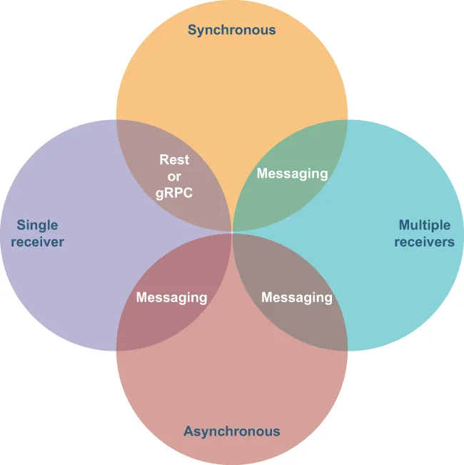

When you build microservice architectures, one of the concerns you need to address is that of interservice communication. There are different options for interservice communication, each with their own respective strengths and weaknesses. Typically, these various types of communication can be classified across two different decision factors. The first factor is whether the communication between the services is synchronous or asynchronous, and the second factor is whether the communication is intended for a single receiver or multiple receivers, as shown in figure 7.1
当你构建微服务架构时，需要解决的问题之一就是服务间通信。服务间通信有多种不同的选项，每一种都有各自的优点和缺点。通常，这些不同类型的通信可以沿着两个不同的决策因素来划分。第一个因素是服务之间的通信是同步的还是异步的，第二个因素是这种通信是面向单个接收方还是多个接收方，如图 7.1 所示。

Figure 7.1 Microservice communication factors and appropriate communication protocols
图 7.1 微服务通信的两个决策因素，以及各自适用的通信协议
Protocols such as HTTP/REST or gRPC are most commonly used as synchronous request/response-based interservice communication mechanisms. With synchronous communication, one service sends a request and waits for a response from another service. The calling service’s execution is blocked and cannot continue its task until it receives a response. This communication pattern is similar to procedure calls in traditional application programming in which a specific method is made to an external service with a specific set of parameters.
HTTP/REST 或 gRPC 这类协议最常被用作基于请求/响应的同步服务间通信机制。在同步通信中，一个服务发出请求，然后等待另一个服务返回响应。调用方服务的执行会被阻塞，在收到响应之前无法继续自己的任务。这种通信模式类似于传统应用程序设计中的过程调用——以一组特定参数去调用外部服务上的某个特定方法。
With asynchronous communication, one service sends a message and does not need to wait for a response. If you want an asynchronous publish/subscribe-based communication mechanism, messaging systems such as Pulsar are a perfect fit. A messaging system is also required to support publish/subscribe interservice communication between a single service that has multiple message receivers. It is not practical to have a service block until all of the intended recipients have acknowledged the message, as some of them may be offline. A much better approach is to have the messaging system retain the messages.
而在异步通信中，一个服务发出消息后无需等待响应。如果你想要一种基于发布/订阅的异步通信机制，那么 Pulsar 这类消息系统就再合适不过了。当一个服务需要面对多个消息接收方时，同样也需要消息系统来支撑这种发布/订阅式的服务间通信。让一个服务阻塞在那里、直到所有预期接收方都确认收到消息为止，是不切实际的——因为它们当中有些可能正处于离线状态。一种好得多的做法是由消息系统来保留这些消息。
These factors and communication mechanisms are good to know so you have clarity on the possible communication mechanisms you can use, but they’re not the most important concerns when building microservices. What is most important is being able to integrate your microservices, while maintaining the independence of microservices, and doing so requires the establishment of a contract between the collaborating services, regardless of the communication mechanism you chose.
了解这些因素和通信机制是有好处的，能让你对自己可选用的通信机制心里有数，但在构建微服务时，它们并不是最要紧的关注点。最要紧的是：既要把各个微服务集成起来，又要保持微服务各自的独立性。而要做到这一点，就必须在相互协作的服务之间建立起一份契约——无论你选择了哪种通信机制。